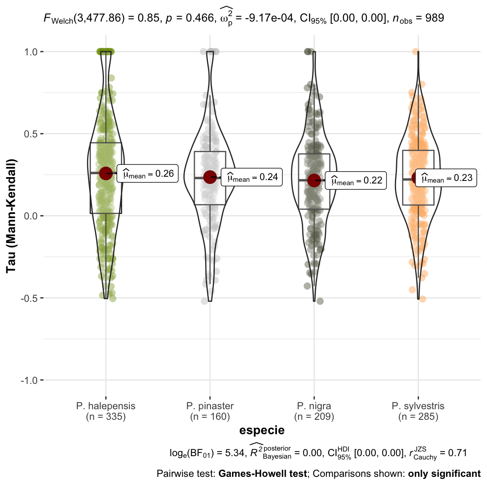
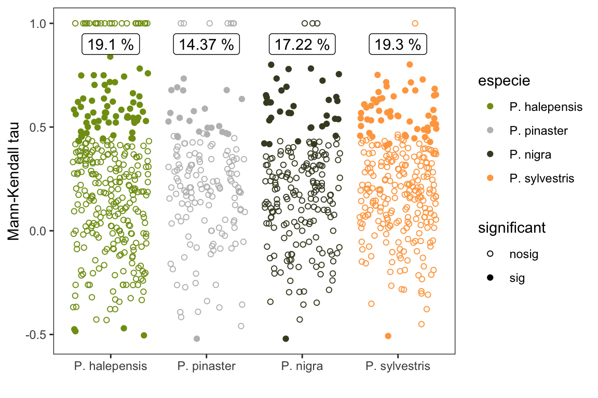
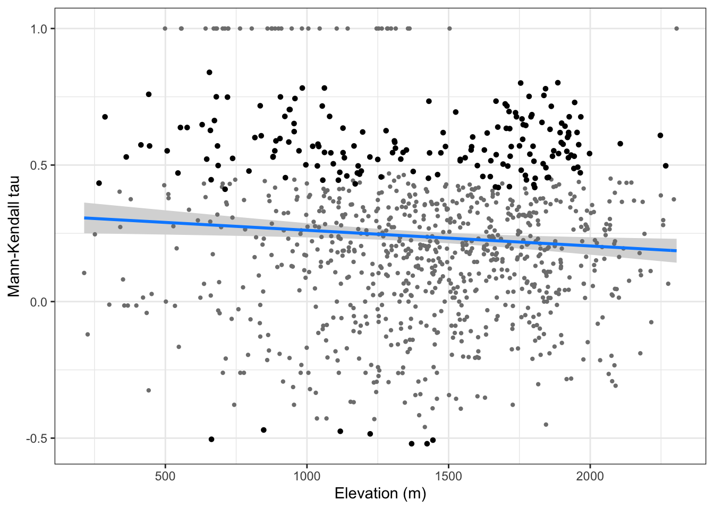
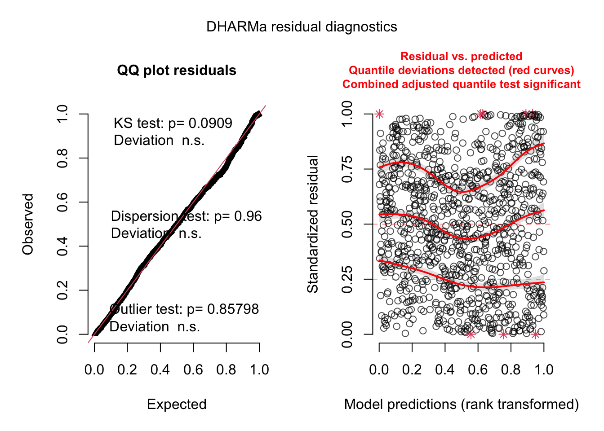
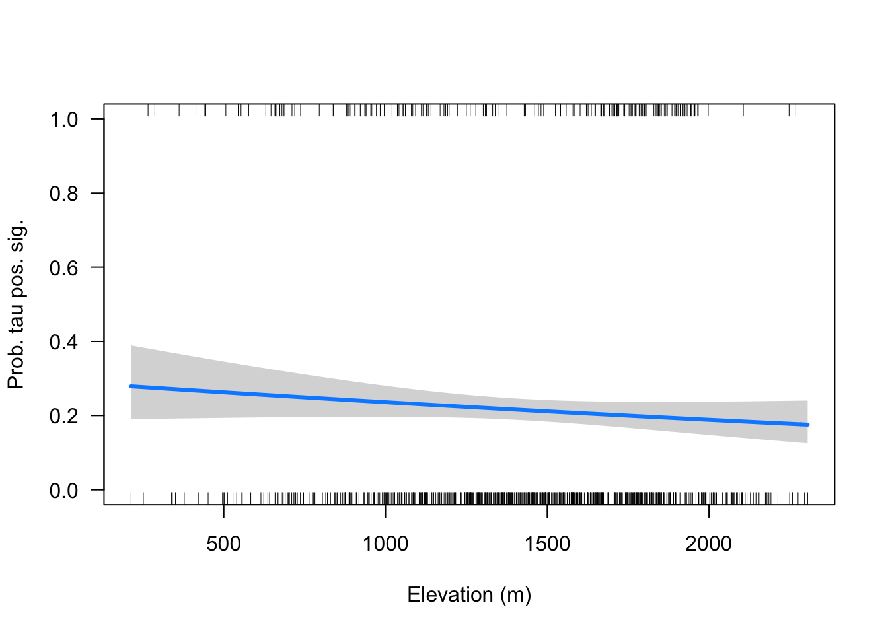

computeMannKendall
Antonio J Perez-Luque
2021-05-18
Last updated: 2021-07-15
Checks: 6 1
Knit directory: booksn_ppm/
This reproducible R Markdown analysis was created with workflowr (version 1.6.2). The Checks tab describes the reproducibility checks that were applied when the results were created. The Past versions tab lists the development history.
The R Markdown file has unstaged changes. To know which version of the R Markdown file created these results, you’ll want to first commit it to the Git repo. If you’re still working on the analysis, you can ignore this warning. When you’re finished, you can run wflow_publish to commit the R Markdown file and build the HTML.
Great job! The global environment was empty. Objects defined in the global environment can affect the analysis in your R Markdown file in unknown ways. For reproduciblity it’s best to always run the code in an empty environment.
The command set.seed(20210517) was run prior to running the code in the R Markdown file. Setting a seed ensures that any results that rely on randomness, e.g. subsampling or permutations, are reproducible.
Great job! Recording the operating system, R version, and package versions is critical for reproducibility.
Nice! There were no cached chunks for this analysis, so you can be confident that you successfully produced the results during this run.
Great job! Using relative paths to the files within your workflowr project makes it easier to run your code on other machines.
Great! You are using Git for version control. Tracking code development and connecting the code version to the results is critical for reproducibility.
The results in this page were generated with repository version 460935f. See the Past versions tab to see a history of the changes made to the R Markdown and HTML files.
Note that you need to be careful to ensure that all relevant files for the analysis have been committed to Git prior to generating the results (you can use wflow_publish or wflow_git_commit). workflowr only checks the R Markdown file, but you know if there are other scripts or data files that it depends on. Below is the status of the Git repository when the results were generated:
Ignored files:
Ignored: .Rhistory
Ignored: .Rproj.user/
Ignored: data/.DS_Store
Ignored: data/data_raw/
Untracked files:
Untracked: analysis/features_plots.Rmd
Untracked: analysis/findPlots.Rmd
Untracked: glmulti.analysis.modgen.back
Untracked: glmulti.analysis.mods.back
Unstaged changes:
Modified: analysis/computeMannKendall.Rmd
Modified: analysis/dataNAO-SierraNevada.Rmd
Modified: analysis/evolucionTemporal.Rmd
Modified: data/coplas2019sn.csv
Modified: output/patron_nao_ppm_sn.pdf
Modified: output/pearson_NAO_especies_sn.pdf
Note that any generated files, e.g. HTML, png, CSS, etc., are not included in this status report because it is ok for generated content to have uncommitted changes.
These are the previous versions of the repository in which changes were made to the R Markdown (analysis/computeMannKendall.Rmd) and HTML (docs/computeMannKendall.html) files. If you’ve configured a remote Git repository (see ?wflow_git_remote), click on the hyperlinks in the table below to view the files as they were in that past version.
| File | Version | Author | Date | Message |
|---|---|---|---|---|
| html | 49cf88e | Antonio J Perez-Luque | 2021-05-27 | Build site. |
| Rmd | 78c1445 | Antonio J Perez-Luque | 2021-05-27 | update plots |
| html | d0f6854 | Antonio J Perez-Luque | 2021-05-27 | Build site. |
| Rmd | 811898c | Antonio J Perez-Luque | 2021-05-27 | reorder pine species |
| html | 53bcfcc | Antonio J Perez-Luque | 2021-05-19 | Build site. |
| Rmd | 8718616 | Antonio J Perez-Luque | 2021-05-19 | fix errors |
| html | 11251b2 | Antonio J Perez-Luque | 2021-05-18 | Build site. |
| Rmd | a00d028 | Antonio J Perez-Luque | 2021-05-18 | analysis of trends |
Calcular la tendencia temporal de la serie a nivel de parcela
library("tidyverse")
library("here")
library("sf")
library("flextable")
library("Kendall")
library("ggpubr")
library("ggstatsplot")
library("DHARMa")coplas2019 <- read_csv(here::here("data/coplas2019sn.csv")) %>%
filter(sp_abrev != "ppinea")
df <- coplas2019 %>%
filter(!is.na(especie)) %>%
dplyr::select(code, especie, `1993`:`2019`) %>%
pivot_longer(names_to = "year", values_to = "infestacion", `1993`:`2019`) - Calculamos la tendencia temporal de la serie usando el test no paramétrico Mann-Kendall (\(tau\))
- Clasificamos la tendencias en sig y no significativas
parcelas <- unique(df$code)
df_trend <- c()
for (i in 1:length(parcelas)) {
aux <- df %>%
filter(year > 2004) %>%
filter(code == parcelas[i]) %>% dplyr::select(infestacion)
#MK
mk <- Kendall::MannKendall(aux$infestacion)
auxNA <- aux$infestacion[!is.na(aux$infestacion)]
sen <- trend::sens.slope(auxNA)
out <- data.frame(code = parcelas[i],
mk_tau = mk$tau,
mk_pvalue = mk$sl,
sen = sen$estimates,
sen_pvalue = sen$p.value)
df_trend <- rbind(df_trend, out)
}
mkdf <- coplas2019 %>%
dplyr::select(
code, elevF, elev_mean, especie) %>%
inner_join(df_trend) %>%
filter(!is.na(especie))
mkdf <- mkdf %>%
mutate(significant = case_when(
mk_pvalue < 0.05 ~ "sig",
TRUE ~ "nosig"
)) %>%
mutate(sig = case_when(
mk_pvalue < 0.05 ~ 1,
TRUE ~ 0))
mkdf$especie <- fct_relevel(mkdf$especie,
"P. halepensis", "P. pinaster",
"P. nigra", "P. sylvestris")- ¿cuantas parcelas tienen tendencia positiva?
mkdf %>% filter(mk_tau > 0) %>% count()# A tibble: 1 x 1
n
<int>
1 784que representan un:
(mkdf %>% filter(mk_tau > 0) %>% count() / mkdf %>% count())*100 n
1 79.27199- Evaluación de las tendencias positivas
mkdf %>%
filter(mk_tau > 0) %>%
filter(significant == "sig") %>%
summarize(mean_sen = mean(mk_tau))# A tibble: 1 x 1
mean_sen
<dbl>
1 0.578- Comparación de las tendencias por especie
plot_comparaTaus <- ggstatsplot::ggbetweenstats(
data = mkdf,
x = especie,
y = mk_tau,
ylab = "Tau (Mann-Kendall)") +
ggplot2::scale_y_continuous(limits=c(-1,1)) +
ggplot2::scale_color_manual(values = colores_pinos)
null device
1 Las tendencias observadas en el nivel de infestación para cada una de las parcelas analizadas se han agrupado por especies y no se observan diferencias en cuanto a la tendencia (\(tau\) de Mann-Kendall), es decir, no se observan tendencias temporales significativamente diferentes entre especies en nuestra serie de datos.
Seguidamente analizamos las tendencias significativas.
pct_sig <- mkdf %>% group_by(especie, significant) %>%
summarise(n=n()) %>%
mutate(pct_tot = round(n/sum(n)*100,2))
pct_sig %>% flextable() %>% autofit()especie | significant | n | pct_tot |
P. halepensis | nosig | 271 | 80.90 |
P. halepensis | sig | 64 | 19.10 |
P. pinaster | nosig | 137 | 85.62 |
P. pinaster | sig | 23 | 14.37 |
P. nigra | nosig | 173 | 82.78 |
P. nigra | sig | 36 | 17.22 |
P. sylvestris | nosig | 230 | 80.70 |
P. sylvestris | sig | 55 | 19.30 |
- Entre un 15-19 % de las parcelas presentan tendencias significativas, la mayoría positivas, lo que indica un aumento de la incidencia media. Al analizar por especie vemos que P. halepensis (~19%) y P. sylvestris (~19.3%) son las que tienen mayor porcentaje de tendencias significativas.
mksig_plot <- ggplot(mkdf, aes(x=especie, y= mk_tau, shape=significant, fill=especie, colour=especie)) +
geom_point(position = position_jitter(),
size=1.5) +
scale_shape_manual(values = c(1, 19)) +
theme_bw() +
ylab("Mann-Kendall tau") + xlab("") +
theme(panel.grid = element_blank()) +
scale_color_manual(values = colores_pinos) +
geom_label(data=(pct_sig %>% filter(significant == "sig")),
aes(x=especie, y=0.9, label=
paste0(pct_tot, " %")),
fill="white", color = "black") ggsave(filename = here::here("output/comparaMKsig_especies.pdf"),
width = 6, height = 5)
print(mksig_plot)
dev.off()null device
1 - Además, destaca que esas tendencias (las significativas) son las que presentan mayor magnitud (\(\mu_{\tau}\) 0.55 - 0.59)
mkdf %>%
filter(significant == "sig") %>%
filter(mk_tau > 0) %>%
ggstatsplot::grouped_gghistostats(x=mk_tau,
grouping.var = especie)
| Version | Author | Date |
|---|---|---|
| 11251b2 | Antonio J Perez-Luque | 2021-05-18 |
Modelizar la tendencia en función de la Elevación
- Construimos un GLM para la tendencia (\(\tau\)) frente a la elevación
# modelo glm
model.tau <- glm(mk_tau ~ elev_mean, data = mkdf, family = "gaussian")
model.tau %>% as_flextable()Estimate | Standard Error | z value | Pr(>|z|) | Signif. | |
(Intercept) | 0.319 | 0.033 | 9.583 | 0.0000 | *** |
elev_mean | -0.000 | 0.000 | -2.545 | 0.0111 | * |
Signif. codes: 0 <= '***' < 0.001 < '**' < 0.01 < '*' < 0.05 < '.' < 0.1 < '' < 1 | |||||
| |||||
(Dispersion parameter for gaussian family taken to be 0.08951858) | |||||
Null deviance: 88.93 on 988 degrees of freedom | |||||
Residual deviance: 88.35 on 987 degrees of freedom | |||||
# visualiza
tau_elev <- visreg::visreg(model.tau, gg=TRUE,
xlab = "Elevation (m)",
ylab = "Mann-Kendall tau") +
theme_bw() +
geom_point(data=(mkdf %>% filter(sig == 1)),
aes(x=elev_mean, y=mk_tau), color = "black", size=1.2)ggsave(filename = here::here("output/tau_elev.pdf"),
width = 9, height = 9, units = "cm")
print(tau_elev)
dev.off()null device
1 Validación del modelo
# plots de validación
par(mfcol=c(2,2))
plot(model.tau)
| Version | Author | Date |
|---|---|---|
| 11251b2 | Antonio J Perez-Luque | 2021-05-18 |
s <- simulateResiduals(fittedModel = model.tau)
plot(s)
Modelo de tendencias significativas vs elevación
- Voy a analizar solo las tau positivas
- No parece existir una relación etnre los taus posisitvo y significativos y la elevación,
tauspos <- mkdf %>% filter(mk_tau >= 0)
tp <- glm(sig ~ elev_mean, data = tauspos, family="binomial")
tp %>% as_flextable()Estimate | Standard Error | z value | Pr(>|z|) | Signif. | |
(Intercept) | -0.889 | 0.295 | -3.011 | 0.0026 | ** |
elev_mean | -0.000 | 0.000 | -1.411 | 0.1581 | |
Signif. codes: 0 <= '***' < 0.001 < '**' < 0.01 < '*' < 0.05 < '.' < 0.1 < '' < 1 | |||||
| |||||
(Dispersion parameter for binomial family taken to be 1) | |||||
Null deviance: 826.8 on 792 degrees of freedom | |||||
Residual deviance: 824.8 on 791 degrees of freedom | |||||
visreg::visreg(tp,
xlab = "Elevation (m)",
ylab = "Prob. tau pos. sig.",
scale = "response",
ylim=c(0,1))
sessionInfo()R version 4.0.2 (2020-06-22)
Platform: x86_64-apple-darwin17.0 (64-bit)
Running under: macOS Catalina 10.15.3
Matrix products: default
BLAS: /Library/Frameworks/R.framework/Versions/4.0/Resources/lib/libRblas.dylib
LAPACK: /Library/Frameworks/R.framework/Versions/4.0/Resources/lib/libRlapack.dylib
locale:
[1] en_US.UTF-8/en_US.UTF-8/en_US.UTF-8/C/en_US.UTF-8/en_US.UTF-8
attached base packages:
[1] stats graphics grDevices utils datasets methods base
other attached packages:
[1] DHARMa_0.3.3.0 ggstatsplot_0.7.2 ggpubr_0.4.0 Kendall_2.2
[5] flextable_0.6.3 sf_0.9-7 here_1.0.1 forcats_0.5.1
[9] stringr_1.4.0 dplyr_1.0.6 purrr_0.3.4 readr_1.4.0
[13] tidyr_1.1.3 tibble_3.1.2 ggplot2_3.3.3 tidyverse_1.3.1
[17] workflowr_1.6.2
loaded via a namespace (and not attached):
[1] utf8_1.1.4 tidyselect_1.1.0
[3] lme4_1.1-26 grid_4.0.2
[5] gmp_0.6-2 munsell_0.5.0
[7] codetools_0.2-18 effectsize_0.4.5
[9] units_0.6-7 statmod_1.4.36
[11] withr_2.4.1 colorspace_2.0-0
[13] qgam_1.3.2 highr_0.8
[15] knitr_1.31 uuid_0.1-4
[17] rstudioapi_0.13 ipmisc_5.0.2
[19] ggsignif_0.6.0 trend_1.1.4
[21] officer_0.3.16 labeling_0.4.2
[23] emmeans_1.5.4 git2r_0.28.0
[25] farver_2.0.3 rprojroot_2.0.2
[27] coda_0.19-4 vctrs_0.3.8
[29] generics_0.1.0 TH.data_1.0-10
[31] xfun_0.23 BWStest_0.2.2
[33] R6_2.5.0 doParallel_1.0.16
[35] BayesFactor_0.9.12-4.2 cachem_1.0.4
[37] reshape_0.8.8 assertthat_0.2.1
[39] promises_1.2.0.1 scales_1.1.1
[41] multcomp_1.4-16 gtable_0.3.0
[43] extraDistr_1.9.1 multcompView_0.1-8
[45] sandwich_3.0-0 rlang_0.4.10
[47] MatrixModels_0.4-1 zeallot_0.1.0
[49] systemfonts_1.0.0 PMCMRplus_1.9.0
[51] splines_4.0.2 rstatix_0.6.0
[53] broom_0.7.6 yaml_2.2.1
[55] abind_1.4-5 modelr_0.1.8
[57] backports_1.2.1 httpuv_1.5.5
[59] tools_4.0.2 ellipsis_0.3.2
[61] jquerylib_0.1.3 WRS2_1.1-1
[63] Rcpp_1.0.6 plyr_1.8.6
[65] base64enc_0.1-3 classInt_0.4-3
[67] pbapply_1.4-3 correlation_0.6.1
[69] zoo_1.8-8 haven_2.3.1
[71] ggrepel_0.9.1 fs_1.5.0
[73] magrittr_2.0.1 data.table_1.13.6
[75] openxlsx_4.2.3 visreg_2.7.0
[77] reprex_2.0.0 mvtnorm_1.1-1
[79] whisker_0.4 mime_0.10
[81] hms_1.0.0 patchwork_1.1.1
[83] evaluate_0.14 xtable_1.8-4
[85] rio_0.5.16 pairwiseComparisons_3.1.3
[87] readxl_1.3.1 rstantools_2.1.1
[89] compiler_4.0.2 KernSmooth_2.23-18
[91] crayon_1.4.1 minqa_1.2.4
[93] htmltools_0.5.1.1 mgcv_1.8-33
[95] mc2d_0.1-18 later_1.1.0.1
[97] lubridate_1.7.10 DBI_1.1.1
[99] SuppDists_1.1-9.5 kSamples_1.2-9
[101] dbplyr_2.1.1 MASS_7.3-53
[103] boot_1.3-26 Matrix_1.3-2
[105] car_3.0-10 cli_2.5.0
[107] parallel_4.0.2 insight_0.14.1
[109] pkgconfig_2.0.3 statsExpressions_1.1.0
[111] foreign_0.8-81 xml2_1.3.2
[113] paletteer_1.3.0 foreach_1.5.1
[115] bslib_0.2.4 ggcorrplot_0.1.3
[117] estimability_1.3 rvest_1.0.0
[119] digest_0.6.27 parameters_0.14.0
[121] rmarkdown_2.8 cellranger_1.1.0
[123] gdtools_0.2.3 curl_4.3
[125] gap_1.2.2 shiny_1.6.0
[127] gtools_3.8.2 nloptr_1.2.2.2
[129] lifecycle_1.0.0 nlme_3.1-152
[131] jsonlite_1.7.2 carData_3.0-4
[133] fansi_0.4.2 pillar_1.6.1
[135] lattice_0.20-41 fastmap_1.1.0
[137] httr_1.4.2 survival_3.2-7
[139] glue_1.4.2 bayestestR_0.9.0
[141] zip_2.1.1 iterators_1.0.13
[143] class_7.3-18 stringi_1.5.3
[145] sass_0.3.1 performance_0.7.2
[147] rematch2_2.1.2 memoise_2.0.0
[149] Rmpfr_0.8-2 e1071_1.7-4